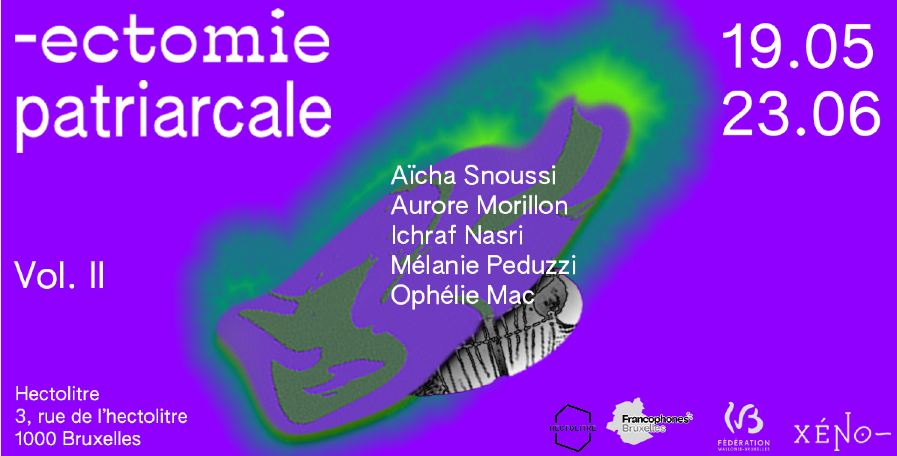

Exposition ° -ectomie patriarcale VOL II °
-Ectomie patriarcale volume II fait partie d’une série d’expositions collectives initiée en 2019. Cinq artistes plasticiennes et performeuses continuent leur dialogue : Aïcha Sñoussi, Aurore Morillon, Ichraf Nasri, Mélanie Peduzzi et Ophélie Mac.
𝗩𝗲𝗿𝗻𝗶𝘀𝘀𝗮𝗴𝗲 𝟭𝟵 𝗺𝗮𝗶 à 𝗽𝗮𝗿𝘁𝗶𝗿 𝗱𝗲 𝟭𝟳𝗵.
Comme pour le premier chapitre, notre collective féministe intersectionnelle s’étendra via un appel à projet 𝘁𝗵𝗲́𝗺𝗮𝘁𝗶𝗾𝘂𝗲 : 𝗖𝗼𝗿𝗽𝘀 𝗲𝗻 𝗹𝘂𝘁𝘁𝗲 ➡️➡️ https://fb.me/e/3zWagsmiD
Un fanzine participatif publié lors du finissage. Il témoignera de la vivacité d’une scène artistique alternative, engagée et porteuse de révolte.
-----------------------
➤L’exposition sera ponctuée de cinq ateliers proposés par des artistes militantes invitées.
➤𝟬𝟵.𝟬𝟱 | 𝗠𝗶𝗹𝗮𝗱𝘆 𝗥𝗲𝗻𝗼𝗶𝗿 | 𝗗𝗲𝘀𝗶𝗿𝘀 𝗲𝘁 𝗕𝗲𝘀𝗼𝗶𝗻𝘀
Un atelier d'écriture créative
10h30- 13h30
➤𝟭𝟳.𝟬𝟱 | 𝗖𝗵𝗿𝗶𝘀𝘁𝗶𝗻𝗲 𝗔𝘃𝗲𝗻𝘁𝗶𝗻 | 𝗔𝘁𝗲𝗹𝗶𝗲𝗿 𝗱𝗲 𝗿𝘂𝗺𝗶𝗻𝗮𝘁𝗶𝗼𝗻
à propos du safe, du quant-à-soi et de la contagion
10h30- 13h30
➤𝟮𝟭.𝟬𝟱 | 𝗝𝗼ë𝗹𝗹𝗲 𝗦𝗮𝗺𝗯𝗶 |𝗦𝗺𝗼𝗼𝘁𝗵𝗶𝗲𝘀 𝗲𝘁 (𝗿)𝗲𝘃𝗼𝗹𝘂𝘁𝗶𝗼𝗻𝘀
Un atelier d'écriture créative
10h30- 13h30
➤𝟬𝟰.𝟬𝟲 |𝗣𝗼𝗿𝗻𝗣𝗿𝗼𝗰𝗲𝘀𝘀
Un atelier de création cinématographique DIY collaborative
14h00- 18h00
➤𝟬𝟴.𝟬𝟲 | 𝗩𝗮𝗹𝗲𝗻𝘁𝗶𝗻𝗲 𝗕𝗼𝗻𝗼𝗺𝗼 | 𝗠𝗶𝘀𝗲 𝗲𝗻 𝗹𝗶𝗲𝗻, 𝗳𝗮𝗶𝗿𝗲 𝗿𝘂𝗽𝘁𝘂𝗿𝗲
Un atelier de création éditoriale
10h00- 17h00
Contactez-nous pour plus d'informations et réservation! xenoplateforme@gmail.com
𝗙𝗶𝗻𝗶𝘀𝘀𝗮𝗴𝗲 𝟮𝟯 𝗷𝘂𝗶𝗻 à 𝗽𝗮𝗿𝘁𝗶𝗿 𝗱𝗲 𝟭𝟳𝗵.
-----------------------------
[𝗔𝗠] -ectomie, c’est comme fonctionner en permanence avec des absentes, des vides. C’est se déplacer de trous noirs qui nous habitent et nous composent. Ca c’est permanent. Y’a d’la mort là dedans.
[𝗜𝗡] -ectomie patriarcale : est un laboratoire qui effectue des prélèvements d’échantillons de parasitose tissulaire sociétale analysés sous une loupe multiloculaire. Dans cet espace nous analysons l'histologie et la généalogie de la pratique patriarcale dans laquelle nous avons macéré, habité, trempé. Liquide visqueux, imprégné d’un goût périmé.
Une étude, une biopsie, un changement de paradigme ?
[𝗔𝗦] -ectomie patriarcale :un état de choses prélevées. Des extraits de choses déplacées, mis en échos pour raconter une histoire particulière.
[𝗠𝗣] Depuis, j'ai accouché.
-Ectomie patriarcale II, mon corps est abîmé, fatigué, moins “sexy”.
[𝗜𝗡] Ce corps-membrane (le patriarcat) qui se greffe à notre contact, qui infecte nos corps, carrie nos pensées et empeste nos gestes, qu'est qu’on en fait après l'avoir étudié ? ou vont ces échantillons ?
[𝗔𝗦] J’imagine ces échantillons prélevés dans des tubes, des bouteilles, la poche arrière d’un jean, l’intérieur d’un carton de jeux de rami. Pour des utilisations rituelles diverses et variées. Ils seraient répertoriés et classés selon une méthode précise, singulière et tout à fait inutile.
[𝗢𝗠] C’est le futur!!!!!
[𝗔𝗠]une maladie c’est pas un objet, ça se diffuse. Une maladie c’est pas un objet mais ça peut se concentrer à un endroit,
Visuel par Marion Lissarrague
Typographies: Authentic Sans, Euripides
Avec le soutien de la Fédération Wallonie-Bruxelles et la Commission communautaire Française - COCOF.
En partenariat avec l'Académie Royale des Beaux-Arts de Bruxelles